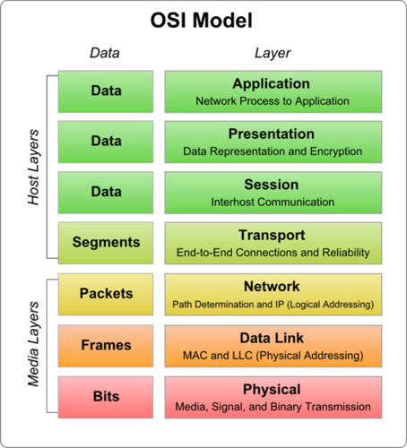

Survival Kit for Tech Students
Don't reinvent the wheel. Leverage the collective brainpower of your fellow engineers.
search_check
Find Exams
Past papers, leaked quizzes, and solved midterms for every CS module. From C++ basics to IoT architectures.
#IOT-READY
upload_file
Share Notes
Upload your handwritten summaries or LaTeX docs. Earn "Aura points" and help the community survive finals week.
#OPEN-SOURCE
Curated by the High-Aura Students
Our repository isn't just a dump of files. Every document is peer-vetted and tagged with difficulty levels. Whether you're fighting pointers or debugging Arduino sensors, we've got the roadmap.
- Verified PDF solutions for CS101 - CS404
- IoT Hardware diagrams & wiring schematics
- Meme-friendly summaries (the only way to learn)